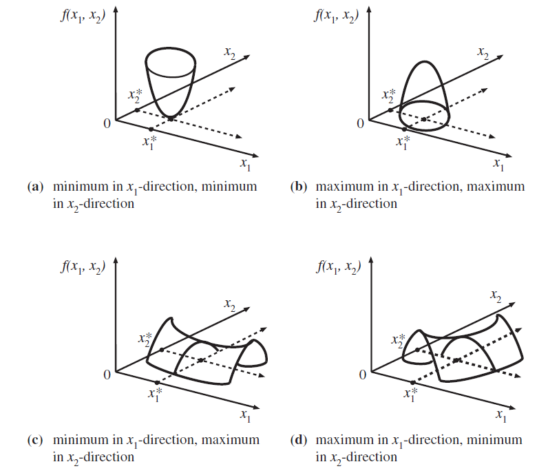
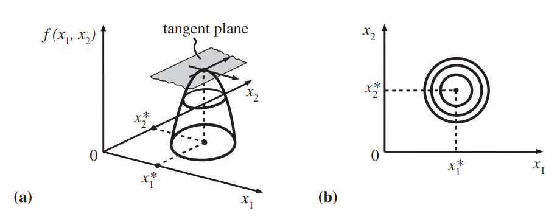
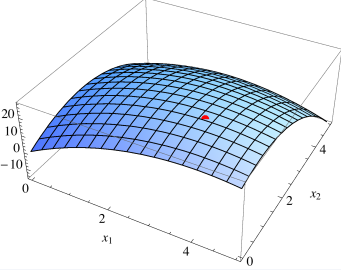
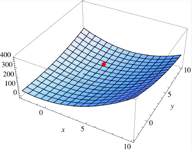
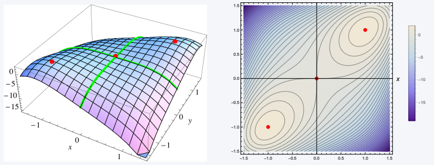
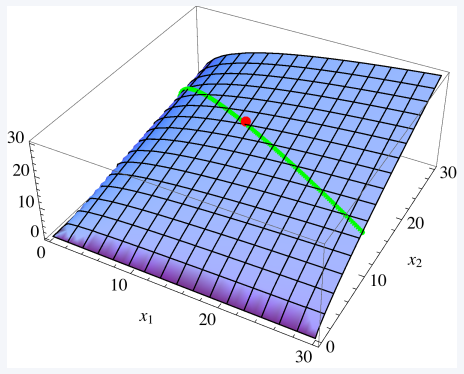
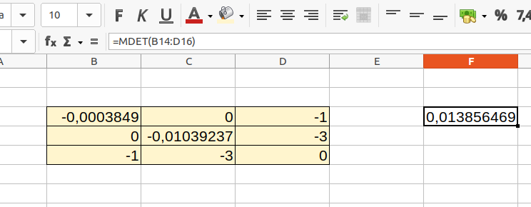
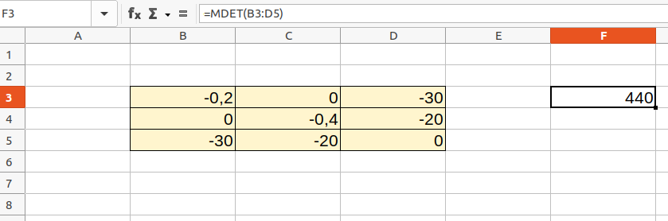

Chapter 11 Optimization II
We now deal with finding extremes (maximum and minimum) of functions of several variables.
11.1 First-order conditions
As in the univariate case, we will first identify stationary points of multivariate functions \(f (x_1, ... , x_n).\) For the sake of simplicity, we use the notation \({\bf x} = (x_1, ... , x_n)\) for points in \(\mathbb {R} ^n\).
Without constraints, the possible solution set of an optimization problem is the entire \(\mathbb {R} ^n.\) With constraints, the solution set is restricted to a subset \(X \subset \mathbb {R} ^n.\)
Definition 6.2 (Stationary points) The function \(f: \mathbb{R} ^n \rightarrow \mathbb{R}\) has a stationary point at \({\bf x^∗} = (x_1^∗ , \ldots , x_n ^∗ )\), if:
\[\begin{align} f_1(x_1^∗ , \ldots , x_n^∗) =& 0\\ f_2(x_1^∗ , \ldots , x_n^∗) =& 0\\ \ldots &\\ f_n(x_1^∗ , \ldots , x_n^∗) =& 0 \end{align}\]
As in the one-dimensional case, not all stationary points are extremes.
In addition to inflection points, there are the so-called saddle points, at which the function attains a maximum in one direction and a minimum in another direction.  As in the univariate case, a necessary condition for \(f\) to have a minimum or maximum at \({\bf x^∗}\) is that \({\bf x^∗}\) is a stationary point.
Theorem 11.1 (Necessary conditions) Let \(f: \mathbb{R} ^n \rightarrow \mathbb{R}\) be differentiable. If \(f\) is a local maximum \(\color{red}{\text{(a local minimum)}}\) at the position \(x^∗ = (x_1^∗ ,\ldots. , x_n ^∗)\) has, so
\(f (x_1^∗ , \ldots , x_n^∗) ≥ f (x_1,\ldots , x_n)\)
\(\color{red}{f (x_1^∗ , \ldots , x_n^∗) \leq f (x_1,\ldots , x_n)}\)
for all points \((x_1, \ldots , x_n)\) in a neighborhood of \(x^∗\) , then holds:
\[\begin{align*}f_1(x_1^∗, \ldots , x_n ^∗ )& = 0\\ f_2(x_1^∗, \ldots , x_n^∗ )& = 0\\ &~~~\vdots\\ f_n(x_1^∗, \ldots , x_n^∗)& = 0. \end{align*}\]

Graph (a) shows the tangent plane at the maximum of the function.
Graph (b) shows the contour lines, i.e. a view from above, where the function values are the same on each line.
Example 11.1 (Price discrimination in monopoly) A monopolist sells an identical product in two separate markets.
The inverse demand functions are:
\(p_1(x_1) = 12 − x_1\)
\(p_2(x_2) = 10 − 2x_2\),
where \(p_i\) are the prices and \(x_i\) are the output quantities on the respective markets.
The firm’s cost function is \(C(x_1,x_2) = 1/2 (x_1 + x_2)^2.\)
The profit function is, therefore:
\(\pi(x_1,x_2) = p_1x_1 + p_2x_2 − C(x_1,x_2) = 12x_1 − x_1^2 + 10x_2 − 2x_2^2 − 1/2 (x_1 + x_2)^2\) .
The first-order conditions are:
\(\pi_1(x_1^∗,x_2^∗) = 12 − 2_1x^∗ − (x_1^∗ + x_2^∗ ) = 0\)
\(\pi_2(x_1^∗,x_2^∗) = 10 − 4x_2^∗ − (x_1^∗ + x_2^∗ ) = 0\)
These conditions show that in order to maximize profit, the marginal returns in both markets must necessarily be the same, since the marginal costs \((x_1^∗ + x_2^∗ )\) are identical.
The profit-maximizing supply quantities are then: \(x_1^∗ = 3.57\) and \(x_2^∗ = 1.29\) (higher sales volume in market \(1\)).

The optimal prices are \(p_1^∗ = 8.43\) and \(p_2^∗ = 7.43\) (the price is higher in market \(1\)).
11.2 Second-order conditions
The first-order conditions are merely necessary but not sufficient for an extreme value.
Second-order conditions allow checking whether a stationary point is a minimum or a maximum.
Intuitively: If at a stationary point \(x^∗\) a small movement in any direction away from \(x^∗\) is accompanied by a decreasing (increasing) function value, then \(f\) at the position \(x^∗\) a local maximum (minimum). We consider the second-order conditions in the bivariate case (\(n = 2\)).
Theorem 6.2 (Second order conditions) Let \(f: \mathbb{R} ^2 \rightarrow \mathbb{R}\) be a function with continuous second partial derivatives in a neighborhood of the stationary point \((x_1^∗ , x_2^∗ )\).
Let:
\[D = f_{x_1x_1} (x_1^∗ ,x_2^∗ ) f_{x_2x_2} (x_1^∗,x_2^∗ ) − f_{x_1x_2}^2 (x_1^∗ ,x_2^∗ ) .\]
- If \(D > 0\) and \(f_{x_1x_1} (x_1^∗ ,x_2^∗ ) > 0\), then \(f\) has \((x_1^∗ ,x_2 ^∗ )\) a local minimum.
- If \(D > 0\) and \(f_{x_1x_1} (x_1^∗ ,x_2^∗ ) < 0\), then \(f\) has \((x_1^∗ ,x_2 ^∗ )\) a local maximum.
- If \(D < 0\), then \(f\) has a saddle point at \((x_1^∗ ,x_2^∗ )\).
- If \(D = 0\), then a conclusion is not possible.
Interpretation: \(D\) is the determinant of the Hessian matrix.
Example 11.2 (Stationary points I) We determine the local extrema and saddle points of the function:
\[f (x,y) = 3x^2 − 2xy + y^2 − 8y.\]
The first-order conditions are:
\(f_x=6x − 2y = 0\)
\(f_y=−2x + 2y − 8 = 0\)
Solution: \(x^*=2, y^*=6.\)
Hence, there is a stationary point at \((x,y) = (2,6)\).
The Hessian matrix i:
\[\begin{bmatrix} f_{xx} \ \ f_{xy} \\ f_{xy} \ \ f_{yy} \end{bmatrix} = \begin{bmatrix} 6 \ \ \ -2 \\ -2 \ \ \ \ 2\end{bmatrix} \]
So \(D = 6 \cdot 2 − (−2)^2 = 12 − 4 = 8 > 0\).
Together with \(f_{xx} = 6 > 0\) it follows that \(f\) has a local minimum at \((2,6)\).

Example 11.3 (Stationary points II) We determine all local extrema and saddle points of:
\[f (x,y) = 4xy − x^4 − y^4.\]
The first order conditions are:
\(f_x=4y − 4x^3 = 0\), so \(y = x^3.\)
\(f_y=4x − 4y^3 = 0\), so \(x = y^3\)
The stationary points are \((0,0)\), \((1,1)\), \((−1, − 1)\).
With \(f_{xx} (x,y) = −12x^2\) , \(f_{yy} (x,y) = −12y^2\) , \(f_{xy} (x,y) = 4\) follows:
\[\begin{equation*} \begin{array}[t]{c|cccc} \hline % (x_0,y_0) & f_{xx}(x_0,y_0) & f_{yy}(x_0,y_0) & f_{xy}(x_0,y_0) & D=f_{xx} f_{yy} - f_{xy}^2\\\hline (0,0) & 0 & 0 & 4 & -16\\ (1,1) & -12 & -12 & 4 & 128\\ (-1,-1) & -12 & -12 & 4 & 128\\\hline \end{array} \end{equation*}\]
Hence \(f\) has local maxima at the positions \((1,1)\) and \((−1, − 1)\); whereas \((0,0)\) is a saddle point.

Generalizing to functions of \(n\) variables\(^\ast\)
To generalize to the case with \(n\) variables, note that \(D\) is the determinant of the Hessian matrix.
In addition, \(f_{xx}\) corresponds to the determinant of the \(1 × 1\) sub-matrix of the Hessian matrix, which starts in row 1 and column 1.
In the general case with \(n\) variables, the determinants of the \(k × k\) submatrices of the Hessian matrix together determine whether a stationary point corresponds to a maximum or a minimum.
If the determinants are all positive, then the Hessian is positive definite and the function has a minimum at the stationary point.
If the signs of the determinants alternate starting with a negative sign, then the Hessian matrix is negative definite and the function has a maximum at the stationary point.
Exercise 11.1 (Extrema of multivariate function) For the function:
\[f(x,y)=x^2+ y^2+xy+x+5y\]
determine maximum and minimum points.
Answer
- The partial derivatives are:
\[f_x(x,y)=2x+y+1,\] \[f_y(x,y)=2y+x+5.\]
Determine the zeros of the gradient:
sets the two partial derivatives equal to zero, the system yields: \[2x+y+1 = 0,\] \[x+2y+5=0.\]
Using Gaussian elimination (e.g. multiply the second equation by \(2\) and subtract from the first equation): \[2x+y+1 = 0,\] \[-\] \[2x+4y+10=0.\] \[\leadsto -3y-9=0\rightarrow y=-3.\]
Inserting it into the second equation gives: \[x+2(-3)+5=0\rightarrow x=1.\]
So the only zero point of the gradient is: \[x=1,y=-3.\]
Check whether maximum or minimum:
Hesse matrix: \[H(x,y)=\begin{pmatrix}2&1\\1&2\end{pmatrix}\]
\(\det(H)\) \[\det(H)=2\cdot 2-1\cdot1 = 1>0\]
\(f_{xx}\) \[f_{xx}(x,y)=2 >0,\]
So the stationary point is the minimum of the function.
11.3 Optimization under constraints: Lagrange method
We now turn to the following problem:
\[\max_{x_1,x_2} f (x_1,x_2), \text{(objective function)},\]
under the condition:
\[g(x_1,x_2) = 0, \text{(constraint/ restriction)}.\]
Note:
\(f\) is called objective function.
\(g = 0\) is the constraint or restriction.
Throughout we assume that \(f\) and \(g\) are continuously differentiable. (A function is continuously differentiable if it is differentiable and the derivative is continuous.)
To solve the problem we introduce the new variable \(\lambda\), the so-called Lagrange multiplier and form the Lagrange function:
\[\mathcal{L} (x_1,x_2, \lambda)=f(x_1,x_2)+ \lambda g(x_1,x_2).\]
- Now one determines the stationary points of \(\mathcal{L}\) with respect to the variables \(x_1,x_2\) and \(\lambda\) using the first-order conditions:
\[\begin{align} \frac{ \partial \mathcal{L} }{ \partial x_1 } &=f_1(x_1^*,x_2^*)+ \lambda ^*g_1(x_1^*,x_2^*)=0 \\ \frac{ \partial \mathcal{L} }{ \partial x_2 } &=f_2(x_1^*,x_2^*)+ \lambda ^*g_2(x_1^*,x_2^*)=0 \\ \frac{ \partial \mathcal{L} }{ \partial \lambda } &=g(x_1^*,x_2^*)=0 \end{align}\]
Note that \(\frac{ \partial \mathcal{L} }{ \partial \lambda } =0\) delivers the constraint itself.
In order for the Lagrange method to be applicable, the following must apply:
\(g_1(x_1^* ,x_2^*) \neq 0\) or \(g_2(x_1^∗ ,x_2^∗) \neq 0.\) That is, \((x_1^∗ ,x_2^∗ )\) is not a stationary point of \(g.\)
Theorem 11.2 (Lagrangian method) Let \(f\) and \(g\) be continuously differentiable. Furthermore, let \((x_1^∗, x_2^∗)\) be a solution to the problem:
\[\max_{x_1,x_2} f (x_1,x_2)\]
under the condition:
\[g(x_1,x_2) = 0.\]
Suppose further that \((x_1^∗,x_2^∗)\) is not a stationary point of \(g\).
Then there exists a real number \(\lambda^∗\) such that \((x_1^∗, x_2^∗,\lambda^∗)\) is a stationary point of the Lagrangian:
\[\mathcal{L} (x_1,x_2, \lambda)=f(x_1,x_2)+ \lambda g(x_1,x_2). \]
In other words, at the position \((x_1^∗, x_2^∗,\lambda^∗)\) the following applies:
\(\frac{ \partial \mathcal{L} }{ \partial x_1 } =0\), \(\frac{ \partial \mathcal{L} }{ \partial x_2 } =0\), \(\frac{ \partial \mathcal{L} }{ \partial \lambda } =0.\)
Example 11.4 (Optimization with Lagrangian method) We solve the following optimization problem:
\[\max_{ x_1,x_2} x_1^{0.25} x_2^{0.75}\]
under the condition:
\[100 − 2x_1 − 4x_2 = 0.\]
The Lagrangian is:
\[\mathcal{L} (x_1,x_2, \lambda)= x_1^{0.25}x_2^{0.75} + \lambda(100-2x_1-4x_2).\]
The first-order conditions are:
\[\begin{align} 0.25x_1^{ −0.75} x_2{ 0.75} − 2\lambda &= 0\\ 0.75x_1^{ 0.25} x_2^{−0.25} − 4\lambda &= 0\\ 100 − 2x_1 − 4x_2 &= 0. \end{align}\]
Eliminating \(\lambda\) in the first two equations yields: \(x_2 = 3/ 2 x_1\)
and substituting into the third equation gives \(x_1^∗ = 12.5\) and \(x_2^∗ = 18.75.\)
For \(\lambda^∗\) we get \(\lambda^∗ = 0.25x_1^{ −0.75} x_2^{ 0.75} /2 = 0.75x_1^{ 0.25} x_2^{ −0 .25} /4 = 0.169425.\)

The green line contains all function values that satisfy the constraint. The red dot marks the maximum on the restriction set.
In generall holds:
- The value \(\lambda^ ∗\) is given as:
\[\lambda ^*= -\frac{ f_1(x_1^*,x_2^*) }{ g_1(x_1^*,x_2^*) } = -\frac{ f_2(x_1^*,x_2^*) } { g_2(x_1^*,x_2^*) }.\]
The value of the Lagrange multiplier \(\lambda^ ∗\) (multiplied by \(−1\) if necessary - this depends on the form of the constraint, e.g. \(x+y-100=0\) and \(100-x-y=0\)) corresponds to the sensitivity of the optimal solution to a slight relaxation of the constraint.
This value is also called the shadow price of the constraint.
The second-order conditions are set up using the Hessian matrix of the Lagrange function:
\[H(x,y,\lambda)= \begin{pmatrix} \mathcal L_{11}& \mathcal L_{12}& \mathcal L_{13}\\ \mathcal L_{21}& \mathcal L_{22}& \mathcal L_{23}\\ \mathcal L_{31}& \mathcal L_{32}& \mathcal L_{33} \end{pmatrix},\]
which consists of the second order partial derivatives of the Lagrange function.
- Plugging in the obtained values \(x^*,y^*,\lambda^*\) gives:
\[H^*= \begin{pmatrix} \mathcal L^*_{11}& \mathcal L^*_{12}& \mathcal L^*_{13}\\ \mathcal L^*_{21}& \mathcal L^*_{22}& \mathcal L^*_{23}\\ \mathcal L^*_{31}& \mathcal L^*_{32}& \mathcal L^*_{33} \end{pmatrix} = \begin{bmatrix} f_{11}+ \lambda^*g_{11} \ \ \ f_{12}+ \lambda ^*g_{12} \ \ \ g_1 \\ f_{21}+ \lambda^*g_{21} \ \ \ f_{22}+ \lambda ^*g_{22} \ \ \ g_2 \\ g_1 \ \ \ \ \ \ \ \ \ \ \ \ \ \ \ \ \ \ g_2 \ \ \ \ \ \ \ \ \ \ \ \ \ \ \ \ \ \ \ 0 \end{bmatrix}\]
- The determinant of this \(3 × 3\) Hessian matrix is:
\[\begin{align}\det(H^*) &= \mathcal L^*_{11}(\mathcal L^*_{22}\mathcal L^*_{33}-\mathcal L^*_{23}\mathcal L^*_{32})-\mathcal L^*_{12}(\mathcal L^*_{21}\mathcal L^*_{33}-\mathcal L^*_{23}\mathcal L^*_{31}) +\mathcal L^*_{13}(\mathcal L^*_{21}\mathcal L^*_{32}-\mathcal L^*_{22}\mathcal L^*_{31}) \\ &=\mathcal L^*_{11} \cdot (-\mathcal L^*_{23}\mathcal L^*_{32})-\mathcal L^*_{12} \cdot (-\mathcal L^*_{23}\mathcal L^*_{31}) + \mathcal L^*_{13}(\mathcal L^*_{21}\mathcal L^*_{32}-\mathcal L^*_{22}\mathcal L^*_{31}) \\ &=-(f_{11}+ \lambda^*g_{11}) \cdot g_2^2+ 2(f_{12}+ \lambda ^*g_{12}) \cdot g_2g_1-(f_{22}+ \lambda^*g_{22})g_1^2. \tag{11.1} \end{align}\]
We will calculate the determinant using software (excel).
Theorem 11.3 (Sufficient conditions for a local maximum/minimum) Let \((x_1^∗, x_2^∗ ,\lambda^∗ )\) be a stationary point of the Lagrangian:
\[\mathcal{L} (x_1,x_2, \lambda)=f(x_1,x_2)+ \lambda g(x_1,x_2).\]
Then:
- \((x_1^∗ ,x_2^∗ )\) is a local maximum of \(f\) under the constraint \(g(x_1,x_2) = 0\), if \(\det(H^∗ ) > 0\);
(ii)\((x_1^∗ ,x_2^∗ )\) is a local minimum of \(f\) under the constraint \(g(x_1,x_2) = 0\), if \(\det(H^∗ ) < 0\).
Example 11.5 (Optimization with the Lagrange method) We continue the previous example 11.4 .
The Hessian matrix is:
\(H^*(x_1,x_2)= \begin{bmatrix} - \frac{0.1875x_2^{0.75}}{x_1^{1.75}} \ \ \frac{0.1875}{x_1 ^{0.75}x_2^{0.25}} \ \ -2 \\ \frac{0.1875}{x_1^{0.75}x_2^{0.25}} \ \ -\frac{0 ,1875x_1^{0.25}}{x_2^{1.25}} \ \ -4 \\-2 \ \ \ \ \ \ \ \ \ \ \ \ \ -4 \ \ \ \ \ \ \ \ \ \ \ \ \ \ \ \ \ 0 \end{bmatrix}\)
The determinant at \((x_1^∗ , x_2^∗ , λ^∗ )\) is \(\det(H^*) = 0.5783.\)So \(f\) has a maximum at \((x_1^∗ , x_2^∗ ).\)
Example 11.6 (utility maximization) We consider the example of utility maximization 1.1 from Chapter 1.
The problem to be solved is:
\[\max_{x,y} U(x,y) = \max_{x,y} \sqrt x + \sqrt y,\]
under the condition \(x + 3y = 100\) (budget constraint).
For the Lagrange method, we rewrite the budget constraint in the form \(100 − x − 3y = 0\).
The Lagrangian is:
\[\mathcal{L} (x,y, \lambda)= \sqrt{x} + \sqrt{y} + \lambda (100-x-3y).\]
The first order conditions (FOC) are:
\[\begin{align} \frac{ \partial \mathcal{L} }{ \partial x } (x,y, \lambda )= \frac{1}{2 \sqrt{x} } - \lambda &=0 \\ \frac{ \partial \mathcal{L} }{ \partial y } (x,y, \lambda )= \frac{1}{2 \sqrt{y} } - 3\lambda &=0 \\ \frac{ \partial \mathcal{L} }{ \partial \lambda } (x,y, \lambda )= 100-x-3y =0. \end{align}\]
The solution is \(x^∗ = 75\), \(y^∗ = 100/12 = 8.3333\) and \(λ^∗ = 0.05774\).
Here \(\lambda^∗\) expresses the marginal utility, i.e. the rate of change of the optimal utility when the budget constraint is relaxed.
The Hessian is:
\[H(x,y,\lambda)=\begin{pmatrix}\frac{\partial^2\mathcal L}{\partial x^2}& \frac{\partial^2\mathcal L}{\partial x\partial y}& \frac{\partial^2\mathcal L}{\partial x\partial\lambda}\\ \frac{\partial^2\mathcal L}{\partial y\partial x}& \frac{\partial^2\mathcal L}{\partial y^2}& \frac{\partial^2\mathcal L}{\partial y\partial\lambda}\\ \frac{\partial^2\mathcal L}{\partial \lambda\partial x}& \frac{\partial^2\mathcal L}{\lambda\partial y}& \frac{\partial^2\mathcal L}{\partial\lambda^2} \end{pmatrix} = \begin{pmatrix}-\frac{1}{4x^{3/2}}& 0& -1\\ 0& -\frac{1}{4y^{3/2}}& -3\\ -1& -3& 0 \end{pmatrix} \]
Plugging in \(x^∗ = 75\), \(y^∗ = 100/12 = 8,3333\) and \(λ^∗ = 0,05774\) gives \[H^*=\begin{pmatrix}-0,0003849& 0& -1\\ 0& -0,0103923& -3\\ -1& -3& \end{pmatrix} \]
The determinant of the Hessian (Formula (11.1)):
\[\det(H^*) = \frac{1}{4(x^*)^{3/2}} \cdot (-3)^2 + \frac{1}{4(y^*)^{3/2}} \cdot (-1)^2 = 0,0139>0,\]
or in Excel:

so it is a maximum.
Exercise 11.2 (Lagrangian method) Let \(f(x,y)=3x+2y+5\), where \(x>0\), \(y>0\) holds.
Determine the point where the extreme of \(f\) is reached under the constraint \(x^2+2y^2=275\). Is the point a maximum or a minimum?
Answer
The Lagrange-Function: \[\mathcal L(x,y,\lambda) = 3x+2y+5+\lambda(275-x^2-2y^2).\]
The FOC:
\[\begin{align}\frac{ \partial \mathcal{L} }{ \partial x } (x,y, \lambda )&= 3 - 2\lambda\cdot x =0 \leadsto x=\color{blue}{\frac3{2\lambda}} \\ \frac{ \partial \mathcal{L} }{ \partial y } (x,y, \lambda )&= 2-4\lambda \cdot y=0 \leadsto y=\frac2{4\lambda} = \color{red}{\frac 1{2\lambda} }\\ \frac{ \partial \mathcal{L} }{ \partial \lambda } (x,y, \lambda )&= 275-x^2-2y^2 =0. \end{align}\]
- Plugging in the expressions for \(x,y\) from the first two euqations in the last one gives:
\[\begin{align}275 - \left(\color{blue}{\frac3{2\lambda}}\right)^2 - 2\cdot \left(\color{red}{\frac1{2\lambda}}\right)^2 &=0\\ 275 - \frac 9{4\lambda^2} - \frac 2{4\lambda^2}&=0\\ -\frac{11}{4\lambda^2}&=-275\\ \lambda^2&=\frac{-11}{-275\cdot 4}=0,01=(0,1)^2\\ \lambda^*&=0,1. \end{align}\]
- Plugging in \(\lambda^*=0,1\) in the expressions for \(x,y\) delivers:
\[x^*=\color{blue}{\frac3{2\cdot 0,1}}=15\text{ und } y^*=\color{red}{\frac 1{2\cdot 0,1} }=5.\]
- The Hessian is:
\[H(x,y,\lambda)=\begin{pmatrix}-2\lambda&0&-2x\\0&-4\lambda&-4y\\-2x&-4y&0\end{pmatrix}\]
- \(H^*=H(x^*,y^*,\lambda^*)\) (plug in the calculated values for \((x^*,y^*,\lambda^*)\) into the Hessian):
\[H^*=H(x^*,y^*,\lambda^*)=\begin{pmatrix}-0,20&0&-30\\0&-0,4&-20\\-30&-20&0\end{pmatrix}\]
- The determinant is (calculate with Excel): \[\det(H^*) = 440>0\]

So, it is a maximum in \((x^*,y^*,\lambda^*)\).